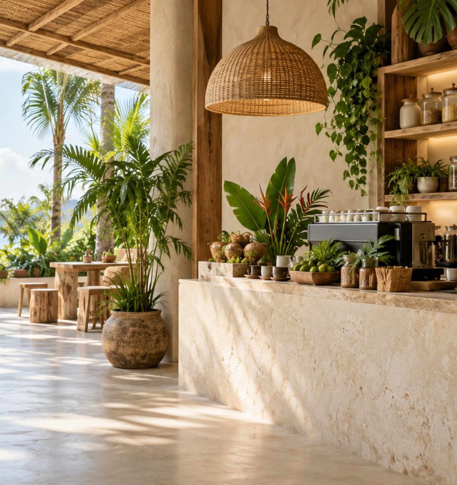
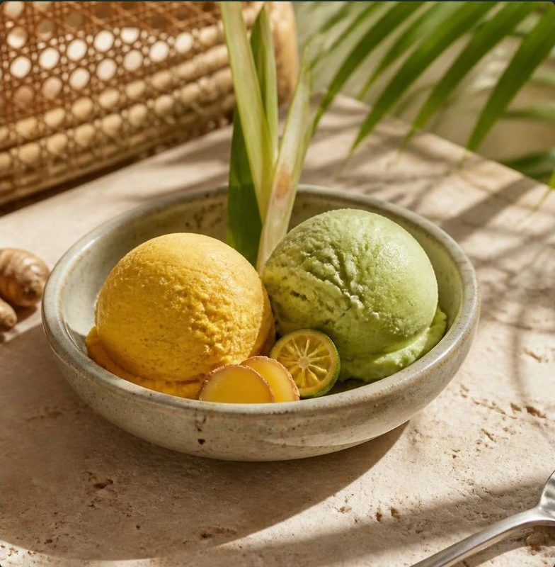
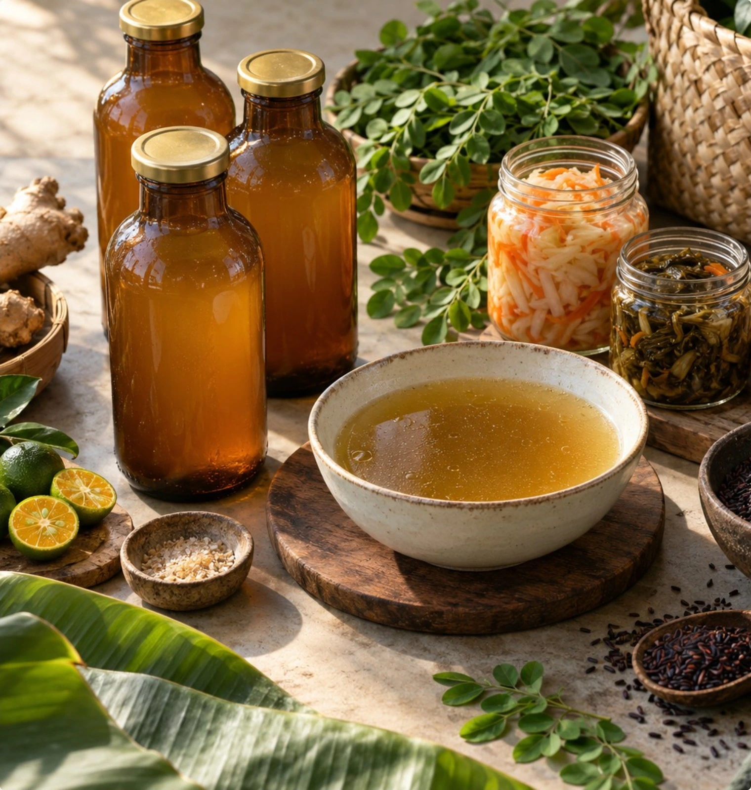
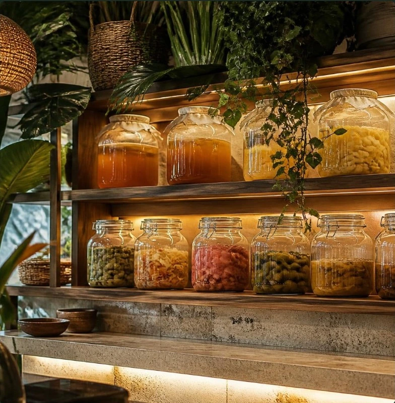
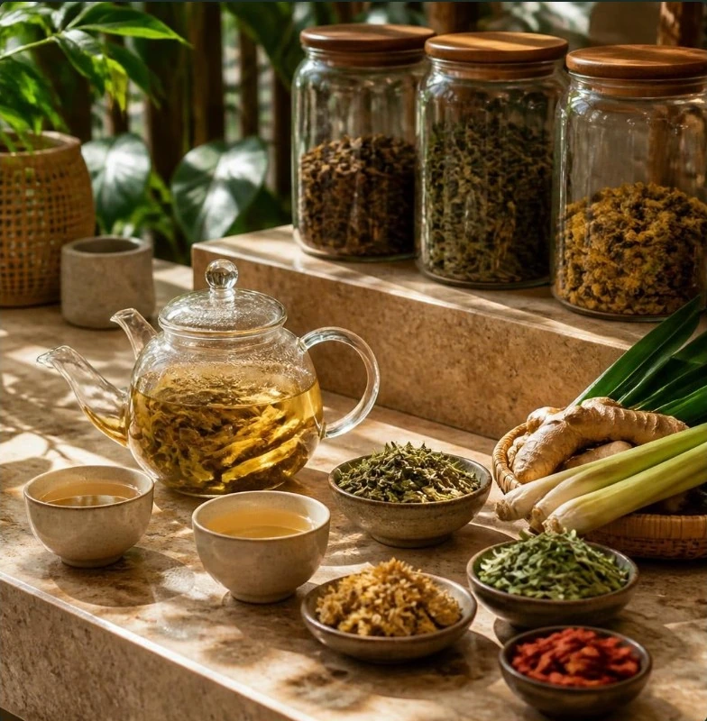

DOWNSTAIRS / THE HERBAL CAFÉ
Your everyday island kitchen.
Coffee after the surf. A bowl of broth. Something cold, cultured or scooped. A welcoming ground floor for the small rituals that make a day.
Explore the café✳ ROOTED IN THE PHILIPPINES · SIARGAO
A Filipino herbal café. A thoughtfully stocked pantry.
A little space to come back to yourself.
For sun, salt, surf.
And everything in between.

THE ALBULARYA’S KITCHEN
Inspired by the Filipino tradition of the albularya — the herbal healer — we’re making room for a slower, more nourishing kind of island life.
Familiar ingredients. Food made with care. Botanical drinks and a pantry worth coming home to. Filipino at heart, with seasonal cues from Traditional Chinese Medicine.
Step inside the houseA LITTLE OF WHAT YOU NEED
Follow your appetite.
There’s a place for every kind of day.

COCONUT BASE · ISLAND INGREDIENTS04 / SCOOP
Our botanical take on ice cream. A dairy-free coconut base meets the herbs, fruits and flavors of the islands.
TWO FLOORS. ONE DAILY RITUAL.
Come for something nourishing.
Stay for a little longer.
DOWNSTAIRS / THE HERBAL CAFÉ
Coffee after the surf. A bowl of broth. Something cold, cultured or scooped. A welcoming ground floor for the small rituals that make a day.
Explore the caféUPSTAIRS / THE PRIVATE LOUNGE
Facials, reflexology and Filipino healing rituals, with physician-led IV and peptide care by Raya Clinic under its own screening and booking.


A LITTLE GOODNESS, TO GO.THE ISLAND PANTRY
Some things are too good to leave at the café. Bring a little of the albularya’s kitchen into yours.
Atchara, burong mangga, herbal kombucha and coconut kefir.
Familiar botanicals, thoughtful blends and a daily drop of ritual.
Chilled or frozen broth pouches, concentrates and dry blends.
LESS RUSH. MORE RITUAL.
Linen. Greenery. Light through the palms. Spaces to linger, reconnect and simply be.
NOTES FROM THE APOTHECARY
Botanical pantry stories, slower island mornings, and the everyday art of a daily ritual.
Read the journal
THE ALBULARYA JOURNAL ↗ALBULARYA CAFÉ · SIARGAO
A daily nourishment house is taking root.
Come along for the journey.